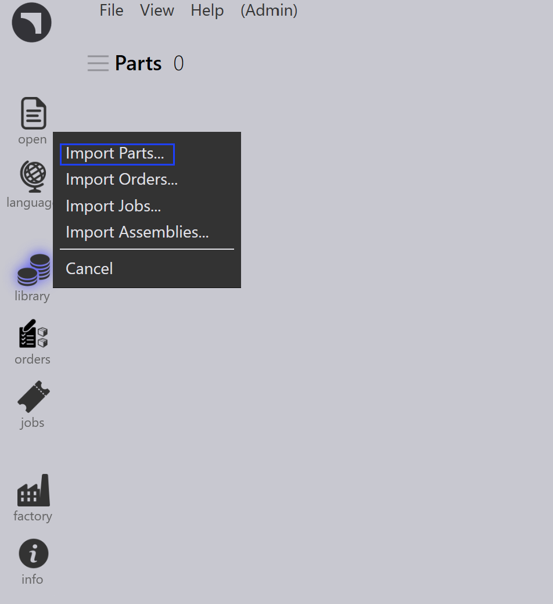

Munkafolyamat
A TruSmartCAM egy gyártásvégrehajtó rendszer, amely kezeli és optimalizálja a lemezmegmunkálási gyártási folyamatokat. A TruSmartCAM munkafolyamata olyan lépésekből áll, amelyeket egy adott feladat vagy folyamat befejezéséhez kell követni. Testreszabhatja a munkafolyamatot a különböző gyártási folyamatokhoz, és adaptálhatja az egyedi igényeihez. A TruSmartCAM munkafolyamata jellemzően a következő lépéseket tartalmazza:
1. A rendszer konfigurálása
Konfigurálja a TruSmartCAM-t, hogy megfeleljen a gyártási környezetének. Ez az alapvető lépés magában foglalja a gépek meghatározását képességeikkel és paramétereikkel, az elérhető anyagok és vastagságtartományok hozzáadását, a szerszámkönyvtárak konfigurálását ütőkkel és bélyegekkel, beállítási lapok létrehozását különböző gépkonfigurációkhoz, valamint a felhasználói fiókok kezelését megfelelő jogosultságokkal. A megfelelően konfigurált rendszer biztosítja a pontos feldolgozást és megelőzi a hibákat a későbbi szakaszokban. Ez a beállítás általában egyszer történik meg a kezdeti telepítés során, időszakos frissítésekkel, ahogy a gyár fejlődik.
További információért lásd: Add/Remove machine, Material, Sheets, Setup tooling, és Configure users.

2. Alkatrészek hozzáadása a könyvtárhoz
Importáljon 2D vagy 3D CAD alkatrészeket az alkatrészkönyvtárba támogatott formátumokkal, mint például DXF, DWG vagy STEP fájlok. Az importálás során a TruSmartCAM automatikusan elemzi az alkatrész geometriáját, ellenőrzi a gyárthatóságot, hozzárendeli a szükséges lemezmegmunkálási technológiát (lézer, ütő vagy kombinált), és előnézeti miniatűröket generál. Az importált alkatrészek csempékként jelennek meg a könyvtár nézetben, ahol a színkódolt ikonok jelzik az alkatrész állapotát, a technológia típusát, az anyagkövetelményeket és a felismert problémákat. Ez a vizuális rendszer lehetővé teszi az alkatrész készültségének gyors értékelését egy pillantásra.
További információért lásd: Library.

3. Alkatrészek és szerszámozás ellenőrzése
Ellenőrizze minden importált alkatrészt lehetséges gyártási problémák miatt. Ellenőrizze, hogy az alkatrész geometriája érvényes és gyártható-e, a szerszám-hozzárendelések helyesek és elérhetők-e, az anyag- és vastagságválasztások megfelelnek-e a készletnek, és a hajlítási sorozatok megfelelően vannak-e meghatározva a formázott alkatrészekhez. Ha problémák merülnek fel, nyissa meg az alkatrészt a TecZone-ban a geometria módosításához, a szerszámozás újrahozzárendeléséhez vagy optimalizálásához, a feldolgozási paraméterek beállításához vagy az anyagspecifikációk kijavításához. A problémák megoldása ebben a szakaszban megelőzi a gyártási késéseket és csökkenti a selejteket a gyártás során.
További információért lásd: Part state és Tooling status.

4. Alkatrészek rendezése munkákba
Csoportosítsa az ellenőrzött alkatrészeket munkákba a gyártási követelmények alapján. Egy munka egy logikai gyártási egységet jelent, amely tartalmazhat alkatrészeket egyetlen vevői rendelésből, közös anyagokat és vastagságot megosztó alkatrészeket, hasonló szállítási határidőkkel rendelkező alkatrészeket, vagy egy kombinációt a termelési stratégia alapján. A munkák tárolót biztosítanak a tervezéshez, lehetővé teszik a kapcsolódó alkatrészek kötegelt feldolgozását, hatékony anyagkihasználást tesznek lehetővé beágyazással, és egyszerűsítik a követést és jelentést. A munkák manuálisan hozhatók létre alkatrészek kiválasztásával, vagy automatikusan előre definiált szabályok és szűrők alapján.
További információért lásd: Jobs.

5. Munkák tervezése gyártógépekre
Ha egy munka létrejön, rendelje hozzá egy megfelelő gyártógéphez. Vegye figyelembe a gép képességeit, beleértve a támogatott technológiákat (lézer, ütő, torony), az anyag- és vastagságkapacitást, az elérhető szerszámozást és a jelenlegi munkaterhelést. Ha több megfelelő gép létezik, válasszon a gyártási prioritás, a gép rendelkezésre állása, a beállítási követelmények vagy a költségoptimalizálás alapján. A hozzárendelés lehet manuális a rugalmasság érdekében, vagy automatikus előre konfigurált szabályok és gépi ütemezési algoritmusok alapján.
További információért lásd: Plan job.

6. NC kiadása a munkákhoz
Ebben a szakaszban a vágási elrendezések generálódnak. Továbbra is szerkesztheti az elrendezéseket és vágási technológiákat adhat hozzá az elrendezéshez a TecZone használatával. Ezt követően exportálja az NC kimenetet és vigye át a gépvezérlőbe vagy egy kijelölt hálózati helyre. A munka ezután zárolásra kerül a további módosítások megakadályozása érdekében, és az állapota "Kiadva" értékre frissül a gyártási nyomon követéshez.
További információért lásd: Send/Recall NC.

7. Gyártás befejezése és munkák lezárása
Végezze el a kiadott munkát a hozzárendelt gépen. A gyártás során a gépkezelő követi az NC programot, ellenőrzi az alkatrész minőségét a vágás közben, kezeli az anyag be- és kirakodását, és kezeli a gépi riasztásokat vagy problémákat. A gyártás befejezése után jelölje meg az egyes alkatrészeket vagy az egész munkát befejezettként a TruSmartCAM-ben. Ez az utolsó lépés frissíti a készletnyilvántartásokat, rögzíti a tényleges gyártási időt és anyagfelhasználást, archiválja a munkaadatokat jelentéshez és elemzéshez, és befejezi a munkafolyamat ciklust.
További információért lásd: Mark complete.